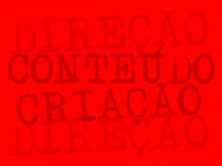

Vídeo Institucional / FGV
FRM / Canal Futura / ItaÚ Social
FUNDAÇÃO GETÚLIO VARGAS e FUNDAÇÃOROBERTO MARINHO fazem da educação pauta de dois trabalhos em execução na RAQUEL BOECHAT COMUNICAÇÕES
O argumento, criado por Raquel Boechat, propõe divulgar os cursos da Fundação Getúlio Vargas usando uma linguagem documental a partir de histórias reais de sucesso.
A Fundação Roberto Marinho - FRM, através do Canal Futura, em ação conjunta a seus parceiros, faz o registro documental das oficinas, atividades educativas e das noites de premiação das etapas regionais do programa “Escrevendo o Futuro”, em sua 3ª edição bienal. O projeto procura desenvolver habilidades de leitura e escrita nos alunos do Ensino Fundamental de escolas públicas de todo o país, por meio de atividades de formação e de um concurso de textos — o Prêmio Escrevendo o Futuro. Criado pela Fundação Itaú Social, com o apoio do Ministério da Educação (MEC), do Canal TV Futura e da União Nacional dos Dirigentes Municipais de Educação (Undime), o projeto tem a coordenação técnica do CENPEC. A iniciativa busca ultrapassar o caráter apenas seletivo usualmente implícito na idéia de um concurso.
Este não é o primeiro trabalho de Raquel Boechat em projetos da Fundação Roberto Marinho. No ano 2000, participou do GLOBO CIÊNCIA à frente de dois departamentos: Direção de Produção e Gerência de Marketing do projeto, ambos através da produtora Arte em Movimento (saiba mais em www.altoestudios.com.br). No ano seguinte, mais uma vez sob a batuta do diretor Adolfo Rosenthal e do Produtor Executivo Fabricio Coimbra, assumiu a produção da temporada 2001 da série UMAS PALAVRAS, apresentado pela editora Bia Correa do Lago. Na ocasião, foram entrevistados vários nomes importantes da literatura e da poesia, entre eles a imortal Ana Maria Machado, o jornalista Eduardo Bueno, o poeta Ledo Ivo, o saudoso e divertido autor de “Pérola”, Mauro Rasi, o compositor Paulinho da Viola, a escritora Lya Luft, e o autor de Hilda Furacão, Roberto Drummond, morto dias depois da entrevista. O registro documental para peças institucionais da Fundação também foram agenda de trabalho da diretora e jornalista. Entre os anos de 2001 e 2002, Raquel Boechat dirigiu o registro documental da restauração do prédio histórico que hoje abriga a CASA DA CULTURA DE PARATY, e no ano seguinte, foi contratada especialmente para as entrevistas da série PETRÓLEO, gravadas na base de Urucu, da Petrobras, em plena selva amazônica. Para saber mais sobre o trabalho de Raquel Boechat para a Fundação Roberto Marinho, visite as páginas COMUNICAÇÃO ESTRATÉGICA e MÍDIAS, no site www.raquelboechat.com |
|
||||
|  |
|
|||